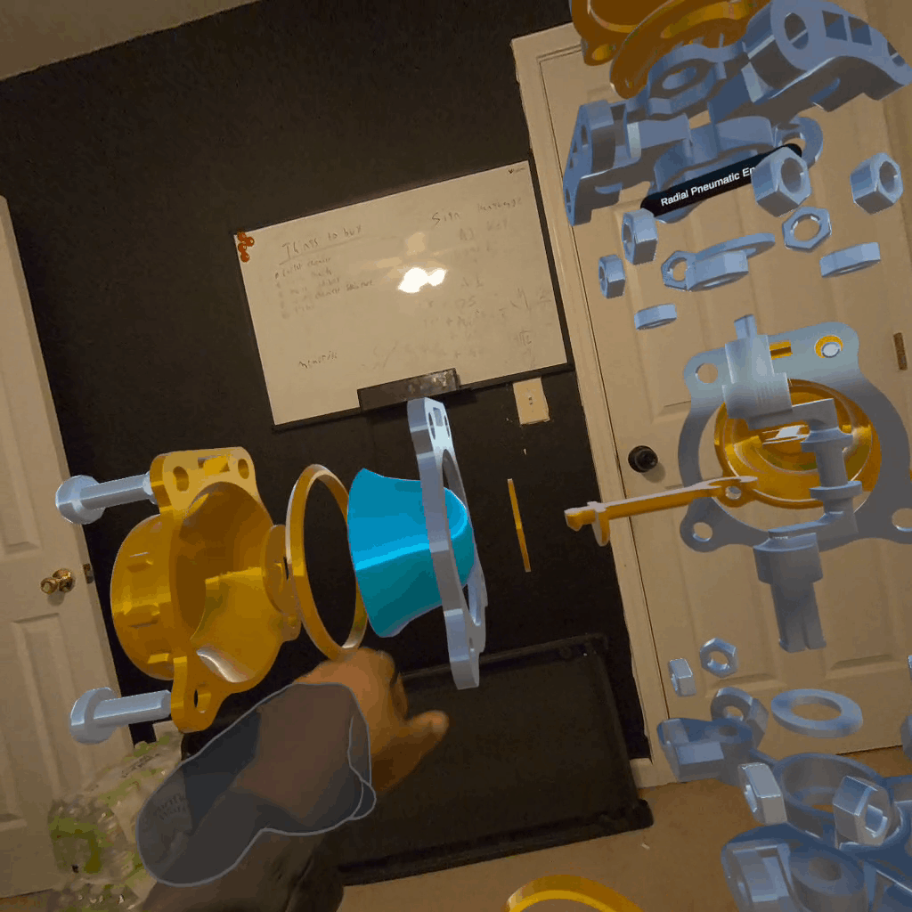
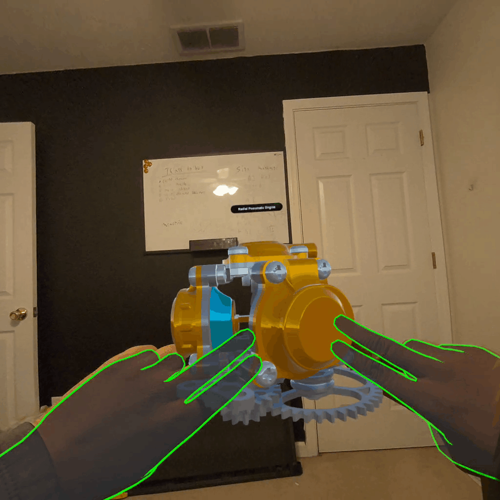
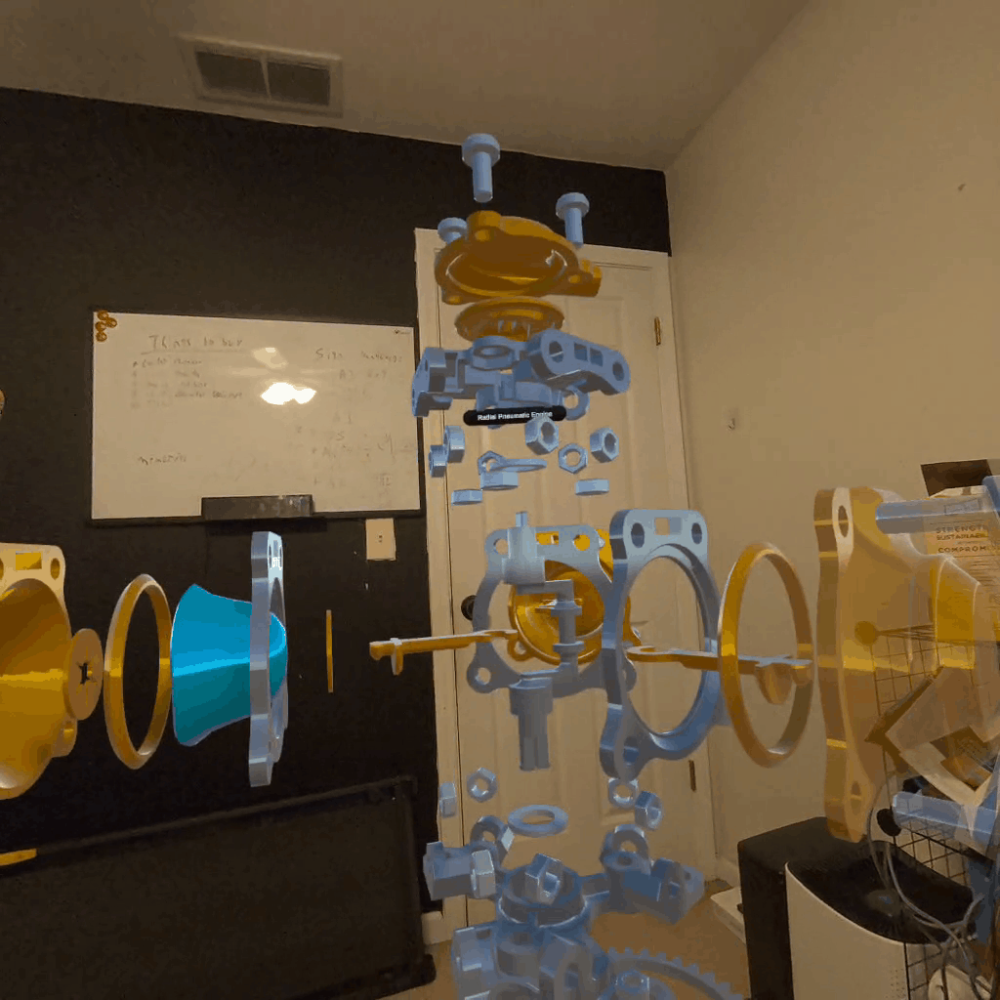

Focus
Spatial control
The experience emphasizes grabbing, moving, and resizing components so users can inspect and assemble parts with deliberate control.
Mixed Reality Project
Engine Assembly is an XR interaction project centered on spatial manipulation and mechanical understanding. Users engage with engine components through grab, move, and scaling mechanics to explore how complex parts fit together in a readable 3D workflow that supports precise handling and spatial reasoning.
Focus
The experience emphasizes grabbing, moving, and resizing components so users can inspect and assemble parts with deliberate control.
Outcome
Complex mechanical relationships become easier to understand when users can manipulate parts directly and see positional changes clearly in 3D space.
Project Media



